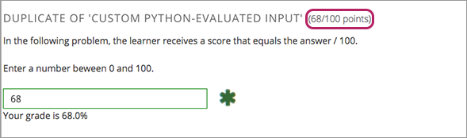

11.8. Custom Python-evaluated Input Problem (Write-Your-Own-Grader)#
Note
EdX offers provisional support for this problem type.
This section provides information about writing your own grader directly in a problem component.
11.8.1. Overview#
In custom Python-evaluated input (also called “write-your-own-grader” problems), the grader uses a Python script that you create and embed in the problem to evaluate a learner’s response or provide hints. These problems can be any type. Numerical input and text input problems are the most common write-your-own-grader problems.
Custom Python-evaluated input problems can include the following advanced problem types.
11.8.2. Create a Custom Python-Evaluated Input Problem in Studio#
In the unit where you want to create the problem, select Problem under Add New Component.
In the problem editor, select Advanced problem types. Then select Custom Python-Evaluated Input.
In the component editor, edit the problem in Script Tag Format.
Select Save.
11.8.3. Script Tag Format#
The script tag format encloses a Python script that contains a “check function”
in a <script> tag, and adds the cfn attribute of the
<customresponse> tag to reference that function.
This section contains the following information about using the <script>
tag.
11.8.3.1. The check Function#
The check function in a <script> tag accepts two arguments.
expectis the value of theexpectattribute of<customresponse>. Ifexpectis not provided as an argument, the function must have another way to determine if the answer is correct.answeris one of the following two options.The value of the answer the learner provided, if the problem only has one response field.
An ordered list of answers the learner provided, if the problem has multiple response fields.
The check function can return any of the following values to indicate
whether the learner’s answer is correct.
True: Indicates that the learner answered correctly for all response fields.False: Indicates that the learner answered incorrectly. All response fields are marked as incorrect."Partial": Indicates that the learner’s answer was partially correct. By default, the learner receives 50% of the points for the problem. For more information, see Award Half Credit.A dictionary of the form
{ 'ok': True, 'msg': 'Message' }. If the dictionary’s value forokis set toTrue, all response fields are marked correct. If it is set toFalse, all response fields are marked incorrect. If it is set to"Partial", the learner receives 50% of the problem points. Themsgis displayed below all response fields, and it can contain XHTML markup.A dictionary of the form
{ 'overall_message': 'Overall message', 'input_list': [ { 'ok': True, 'msg': 'Feedback for input 1'}, { 'ok': False, 'msg': 'Feedback for input 2'}, { 'ok': 'Partial', 'msg': 'Feedback for input 3'} ... ] }
The last form is useful for responses that contain multiple response fields. It allows you to provide feedback for each response field individually, as well as a message that applies to the entire response.
11.8.3.2. Example with the Script Tag#
In the following example, <customresponse> tags reference the
test_add_to_ten and test_add functions that are in the <script>
tag.
Important
Python honors indentation. Within the <script> tag, the def
check_func(expect, ans): line must have no indentation.
<problem>
<script type="loncapa/python">
def test_add(expect, ans):
try:
a1=int(ans[0])
a2=int(ans[1])
return (a1+a2) == int(expect)
except ValueError:
return False
def test_add_to_ten(expect, ans):
return test_add(10, ans)
</script>
<p>Enter two integers that sum to 10. </p>
<customresponse cfn="test_add_to_ten">
<textline size="10"/><br/>
<textline size="10"/>
</customresponse>
<p>Enter two integers that sum to 20: </p>
<customresponse cfn="test_add" expect="20">
<textline size="40" correct_answer="11" label="Integer #1"/><br/>
<textline size="40" correct_answer="9" label="Integer #2"/>
</customresponse>
<solution>
<div class="detailed-solution">
<p>Explanation</p>
<p>Any set of integers on the line \(y = 10 - x\) and \(y = 20 - x\)
satisfies these constraints.</p>
<p>You can also add images within the solution clause, like so:</p>
<img src="/static/images/placeholder-image.png"/>
</div>
</solution>
</problem>
11.8.3.3. Example of the check Function Returning a Dictionary#
The following example shows a
checkfunction that returns a dictionary.
def check(expect, answer_given):
check1 = (int(answer_given[0]) == 1)
check2 = (int(answer_given[1]) == 2)
check3 = (int(answer_given[2]) == 3)
return {'overall_message': 'Overall message',
'input_list': [
{ 'ok': check1, 'msg': 'Feedback 1'},
{ 'ok': check2, 'msg': 'Feedback 2'},
{ 'ok': check3, 'msg': 'Feedback 3'} ] }
The function checks that the user entered 1 for the first input, 2 for
the second input, and 3 for the third input. It provides feedback messages
for each individual input, as well as a message displayed below the entire
problem.
11.8.3.4. Script Tag Attributes#
The following table explains the important attributes and values in the preceding example.
|
Indicates that the problem contains a Python script. |
|
Indicates that the function |
|
Indicates that the function |
<textline size=”10” correct_answer=”3”/> |
This tag includes the |
11.8.3.5. Create a Custom Python-Evaluated Input Problem in Script Tag Format#
To create a custom Python-evaluated input problem using a <script> tag,
follow these steps.
In the component editor, modify the example as needed.
Select Save.
Problem Code:
<problem>
<p>This question has two parts.</p>
<script type="loncapa/python">
def test_add(expect, ans):
try:
a1=int(ans[0])
a2=int(ans[1])
return (a1+a2) == int(expect)
except ValueError:
return False
def test_add_to_ten(expect, ans):
return test_add(10, ans)
</script>
<p>Part 1: Enter two integers that sum to 10. </p>
<customresponse cfn="test_add_to_ten">
<textline size="10" correct_answer="3" label="Integer #1"/><br/>
<textline size="10" correct_answer="7" label="Integer #2"/>
</customresponse>
<p>Part 2: Enter two integers that sum to 20. </p>
<customresponse cfn="test_add" expect="20">
<textline size="10" label="Integer #1"/><br/>
<textline size="10" label="Integer #2"/>
</customresponse>
<solution>
<div class="detailed-solution">
<p>Explanation</p>
<p>For part 1, any two numbers of the form <i>n</i> and <i>10-n</i>,
where <i>n</i> is any integer, will work. One possible answer would
be the pair 0 and 10.</p>
<p>For part 2, any two numbers of the form <i>n</i> and <i>20-n</i>, where <i>n</i> is any integer, will work. One possible answer would be the pair 1 and 19</p>
</div>
</solution>
</problem>
Templates
The following template includes answers that appear when the learner selects Show Answer.
<problem>
<script type="loncapa/python">
def test_add(expect,ans):
a1=float(ans[0])
a2=float(ans[1])
return (a1+a2)== float(expect)
</script>
<p>Problem text</p>
<customresponse cfn="test_add" expect="20">
<textline size="10" correct_answer="11" label="Integer #1"/><br/>
<textline size="10" correct_answer="9" label="Integer #2"/>
</customresponse>
<solution>
<div class="detailed-solution">
<p>Solution or Explanation Heading</p>
<p>Solution or explanation text</p>
</div>
</solution>
</problem>
The following template does not return answers when the learner selects Show Answer. If your problem does not include answers for the learner to see, make sure to set Show Answer to Never in the problem component.
<problem>
<script type="loncapa/python">
def test_add(expect,ans):
a1=float(ans[0])
a2=float(ans[1])
return (a1+a2)== float(expect)
</script>
<p>Enter two real numbers that sum to 20: </p>
<customresponse cfn="test_add" expect="20">
<textline size="10" label="Integer #1"/><br/>
<textline size="10" label="Integer #2"/>
</customresponse>
<solution>
<div class="detailed-solution">
<p>Solution or Explanation Heading</p>
<p>Solution or explanation text</p>
</div>
</solution>
</problem>
11.8.3.6. Award Partial Credit#
You can configure a custom Python-evaluated input problem so that learners who give a partially correct answer receive partial credit for the problem. You can award 50% of the points for the problem, or you can award a different percentage of points. For more information, see the following sections.
11.8.3.6.1. Award Half Credit#
You can configure a problem to award 50% of the possible points. To provide a learner with a more granular score, see Award a Percentage of Credit.
The check function must return the value "Partial" in one of the
following ways.
Return the value
"Partial"directly.Return the value
"Partial"in the dictionary that is returned, in the following form.{ 'ok': 'Partial', 'msg': 'Message' }Return the value
"Partial"as part of the input list for multi-part problems.{ 'overall_message': 'Overall message', 'input_list': [ { 'ok': True, 'msg': 'Feedback for input 1'}, { 'ok': False, 'msg': 'Feedback for input 2'}, { 'ok': 'Partial', 'msg': 'Feedback for input 3'} ... ] }
With all of these options, True awards learners with 100% of the available
points for the problem, 'Partial' with 50%, and False with 0%.
For more information about check function return values, see The check
Function.
11.8.3.6.2. Award a Percentage of Credit#
You can configure a problem to return a percent value as a grade. This method provides greater flexibility in assigning the learner a score than awarding half credit.
In the following example, the learner’s score equals the answer divided by 100.
The following code shows the configuration of this problem.
<problem>
<p>In the following problem, the learner receives a score that equals the
answer / 100. If the learner's answer is greater than 100 or less than 0,
the score equals 0.</p>
<script type="loncapa/python">
def give_partial_credit(expect, ans):
ans = float(ans)
if ans > 100 or ans < 0:
# Assign a score of zero if the answer is less than zero or over 100.
ans = 0
grade = ans/100
return {
'input_list': [
{ 'ok': True, 'msg': 'Your grade is ' + str(ans) + '%', 'grade_decimal':grade},
]
}
</script>
<p>Enter a number beween 0 and 100.</p>
<customresponse cfn="give_partial_credit">
<textline points="100" size="40" label="Ans1"/><br/>
</customresponse>
</problem>
This example illustrates the following points.
The
pointsattribute of the<customresponse>element specifies that the question is worth 100 points.The
give_partial_creditfunction checks that the answer is between 0 and 100, and if so divides the learner’s answer by 100 to determine the grade.The
input_listthat is returned specifies that:The answer is acceptable and can receive partial or full credit, with the item
'ok': True.The learner receives the message
Your grade isfollowed by the percent grade, with the item'msg': 'Your grade is ' + str(ans) + '%'.The grade assigned is the learner’s answer divided by 100, with the item
'grade_decimal':grade.
You can enhance and apply this example for your own partial credit problems.
11.8.3.7. Create a Randomized Custom Python-Evaluated Input Problem#
You can create a custom Python-evaluated input problem that randomizes variables in the Python code.
Note
In the problem settings, you must set the Randomization value to something other than Never to have Python variables randomized. See Randomization for more information.
The following example demonstrates using randomization with a Python-evaluated input problem.
Note
This example uses the method random.randint to generate random numbers.
You can use any standard Python library for this purpose.
<problem>
<p>Some problems in the course will utilize randomized parameters.
For such problems, after you check your answer you will have the option
of resetting the question, which reconstructs the problem with a new
set of parameters.</p>
<script type="loncapa/python">
x1 = random.randint(0, 100)
x2 = random.randint(0, 100)
y = x1+x2
</script>
<p>Let (x_1 = $x1) and (x_2 = $x2). What is the value of (x_1+x_2)?</p>
<numericalresponse answer="$y">
<responseparam type="tolerance" default="0.01%" name="tol"
description="Numerical Tolerance"/>
<textline size="10"/>
</numericalresponse>
<solution>
<p><b>Explanation:</b></p>
</solution>
</problem>